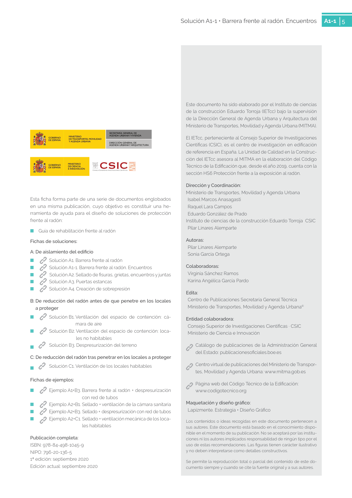

<!doctype html>
<html lang="es"><head><meta charset="utf-8">
<meta name="viewport" content="width=device-width, initial-scale=1">
<title>GUIA · p. 5 — Página 5</title><link rel="stylesheet" href="../estilo.css">
</head><body>
<nav><a href="../index.html">Índice</a> › <a href="../doc/guia-pdf-3c6b9f4198e2-sin-fecha-2649520a08a9.html">GUIA</a> › p. 5</nav>

<header class="meta">
<p><strong>GUIA</strong> · Página 5 · versión sin-fecha</p>
<p>SHA256: <code>2649520a08a9051b02b018b714c34a47f9490518850ba322f7eb59e04930fb89</code> · página física 5 de 5 · métodos de encabezado
solo si están cotejados.</p>
<p><a href="../doc/guia-pdf-3c6b9f4198e2-sin-fecha-2649520a08a9.html">Documento</a> · <a href="guia-pdf-3c6b9f4198e2-sin-fecha-2649520a08a9__p0004.html">← p. 4</a></p>
<p>Formatos: <a href="../../contenido/docs/GUIA-PDF-3c6b9f4198e2/sin-fecha__2649520a08a9/pagina/p0005.md">Markdown</a> · <a href="../../contenido/docs/GUIA-PDF-3c6b9f4198e2/sin-fecha__2649520a08a9/bloque/p0005.json">JSON de bloques</a> · <a href="../../contenido/docs/GUIA-PDF-3c6b9f4198e2/sin-fecha__2649520a08a9/fuente.pdf#page=5">PDF p. 5</a> · <a href="../../contenido/docs/GUIA-PDF-3c6b9f4198e2/sin-fecha__2649520a08a9/figura/p0005.png">imagen PNG</a></p>
</header>
<nav class="paginas"><a href="../doc/guia-pdf-3c6b9f4198e2-sin-fecha-2649520a08a9.html">Documento</a> <a href="guia-pdf-3c6b9f4198e2-sin-fecha-2649520a08a9__p0004.html">← p. 4</a></nav>
<h2>Encabezado de la página</h2><ul><li>Sin encabezado de fuente cotejada en esta página.</li></ul>
<p class="aviso">Página gráfica: el texto extraído puede ser parcial. Prevalece la imagen/PDF; depende de ellos.</p>
<pre class="literal">Solución A1-1 • Barrera frente al radón. Encuentros 
A1-1
5
Este documento ha sido elaborado por el Instituto de ciencias 
de la construcción Eduardo Torroja (IETcc) bajo la supervisión 
de la Dirección General de Agenda Urbana y Arquitectura del 
Ministerio de Transportes, Movilidad y Agenda Urbana (MITMA).
El IETcc, perteneciente al Consejo Superior de Investigaciones 
Científicas (CSIC), es el centro de investigación en edificación 
de referencia en España. La Unidad de Calidad en la Construc­
ción del IETcc asesora al MITMA en la elaboración del Código 
Técnico de la Edificación que, desde el año 2019, cuenta con la 
sección HS6 Protección frente a la exposición al radón.
Dirección y Coordinación:
Ministerio de Transportes, Movilidad y Agenda Urbana
Isabel Marcos Anasagasti
Raquel Lara Campos
Eduardo González de Prado
Instituto de ciencias de la construcción Eduardo Torroja  CSIC
Pilar Linares Alemparte
Autoras:
Pilar Linares Alemparte
Sonia García Ortega
Colaboradoras:
Virginia Sánchez Ramos
Karina Angélica García Pardo
Edita:
Centro de Publicaciones Secretaría General Técnica
Ministerio de Transportes, Movilidad y Agenda Urbana©
Entidad colaboradora:
Consejo Superior de Investigaciones Científicas · CSIC
Ministerio de Ciencia e Innovación
  
Catálogo de publicaciones de la Administración General 
del Estado: publicacionesoficiales.boe.es 
  Centro virtual de publicaciones del Ministerio de Transpor­
tes, Movilidad y Agenda Urbana: www.mitma.gob.es
  Página web del Código Técnico de la Edificación:
www.codigotecnico.org
Maquetación y diseño gráfico:
Lapizmente. Estrategia • Diseño Gráfico
Los contenidos o ideas recogidas en este documento pertenecen a 
sus autores. Este documento está basado en el conocimiento dispo­
nible en el momento de su publicación. No se aceptará por las institu­
ciones ni los autores implicados responsabilidad de ningún tipo por el 
uso de estas recomendaciones. Las figuras tienen carácter ilustrativo 
y no deben interpretarse como detalles constructivos.
Se permite la reproducción total o parcial del contenido de este do­
cumento siempre y cuando se cite la fuente original y a sus autores.
Esta ficha forma parte de una serie de documentos englobados 
en una misma publicación, cuyo objetivo es constituir una he­
rramienta de ayuda para el diseño de soluciones de protección 
frente al radón:
	
■
Guía de rehabilitación frente al radón
Fichas de soluciones:
A: De aislamiento del edificio 
	
■
 
  Solución A1. Barrera frente al radón
	
■
 
  Solución A1-1. Barrera frente al radón. Encuentros
	
■
 
   Solución A2. Sellado de fisuras, grietas, encuentros y juntas 
	
■
 
  Solución A3. Puertas estancas
	
■
 
  Solución A4. Creación de sobrepresión
B: De reducción del radón antes de que penetre en los locales 
a proteger 
	
■
 
  Solución B1. Ventilación del espacio de contención: cá­
mara de aire
	
■
 
  Solución B2. Ventilación del espacio de contención: loca­
les no habitables
	
■
   Solución B3. Despresurización del terreno
C: De reducción del radón tras penetrar en los locales a proteger 
	
■
   Solución C1. Ventilación de los locales habitables
Fichas de ejemplos:
	
■
 
  Ejemplo A1+B3. Barrera frente al radón + despresurización 
con red de tubos
	
■
 
  Ejemplo A2+B1. Sellado + ventilación de la cámara sanitaria
	
■
 
  Ejemplo A2+B3.  Sellado + despresurización con red de tubos
	
■
 
  Ejemplo A2+C1. Sellado + ventilación mecánica de los loca-
les habitables
Publicación completa:
ISBN: 978-84-498-1045-9
NIPO: 796-20-136-5
1ª edición: septiembre 2020
Edición actual: septiembre 2020
SECRETARÍA GENERAL DE
AGENDA URBANA Y VIVIENDA
DIRECCIÓN GENERAL DE
AGENDA URBANA Y ARQUITECTURA
GOBIERNO
DE ESPAÑA
MINISTERIO
DE TRANSPORTES, MOVILIDAD
Y AGENDA URBANA
GOBIERNO
DE ESPAÑA
MINISTERIO
DE CIENCIA
E INNOVACIÓN
</pre>
<figure><a href="../../contenido/docs/GUIA-PDF-3c6b9f4198e2/sin-fecha__2649520a08a9/figura/p0005.png"></a><figcaption>Imagen de la página 5 (PNG ya extraído; prevalece sobre fórmulas).</figcaption></figure>
<h2>Tablas candidatas de esta página</h2><ul><li><a href="../../contenido/docs/GUIA-PDF-3c6b9f4198e2/sin-fecha__2649520a08a9/tabla/p0005_t01.json">p0005_t01.json</a> · <a href="../../contenido/docs/GUIA-PDF-3c6b9f4198e2/sin-fecha__2649520a08a9/tabla/p0005_t01.csv">.csv</a> (0 × 0; candidata, no reconstruida aquí)</li></ul>
<h2>Referencias, notas y excepciones (página y vecinas)</h2><ul><li>Sin referencias o notas separadas en el JSON.</li></ul>
<h2>Apartados que incluyen esta página</h2><ul><li><a href="../apartado/guia-pdf-3c6b9f4198e2-sin-fecha-2649520a08a9__a0019.html">ID a0019 · Si la nueva barrera es un elemento de hormigón</a></li><li><a href="../apartado/guia-pdf-3c6b9f4198e2-sin-fecha-2649520a08a9__a0020.html">ID a0020 · sección HS6 Protección frente a la exposición al radón.</a></li></ul>

<footer>Generado estáticamente desde JSON normalizado; sin JavaScript ni servicios externos.
El JSON es la fuente; este HTML es caché reproducible.</footer>
</body></html>
